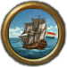

海戰（Naval warfare）是交戰雙方贏得制海權最重要的手段。雖然大部分戰爭都是在陸地上進行，海戰可以對敵方貿易，殖民，海外擴張等方面造成巨大的傷害。
海戰介面

就像陸戰一樣，海戰會在兩支艦隊在同一海區遭遇時爆發。而且會像陸戰一樣持續許多天，所以這種情況應該被理解為雙方艦隊在佔據有力風向，對峙，小規模戰鬥之後終於迎來決戰的時刻。
在歐陸風雲中，戰鬥不需要玩家的參與，但戰鬥介面現在會顯示出更多的信息，例如船隻交戰的目標。
海戰介面顯示了交戰雙方艦隊的總體實力。戰鬥開始時，雙方先進行火力傷害階段，之後便會以類似撞擊等行為進入衝擊傷害階段。這兩階段會一直重複到其中一方撤退或失去所有的船隻或士氣。每艘船的狀態以百分比顯示在介面上，把鼠標放在上面便可看見該戰艦正在攻擊的敵軍，士氣，耐久和船隻類型。
部署
艦隊組成
- 主條目：海軍#組成部分
艦隊的移動速度由最慢的船隻決定，所以一般並不推薦混合艦隊，除非需要大船護衛例如運輸船之類的小船。槳帆戰艦在內海的戰鬥力加倍，而運輸船可以運送陸軍單位。
接戰寬度
接戰寬度（英文：Engagement Width）在1.16 版本引入，指海戰的戰爭寬度。與陸戰的"戰線寬度"不同的是，海戰中兩個參與者的"戰鬥寬度"是獨立的，這意味着一個參與者可以比另一個參與者有着更寬的戰鬥寬度，重型戰艦佔用3的戰鬥寬度。商船和槳帆，運輸船分別佔用1、0.5、1的戰寬。
海戰的基礎寬度為20，船隊的旗艦有「改良瞭望台」修正增加3的接戰寬度，更多修正來自下列：
- 海軍將領的
 機動值，每點 +10%
機動值，每點 +10% - 近海作戰 -20%
- 提升外交科技
- 增加接戰寬度
- +20%「海軍交戰」 大革命時代能力
- +10% 每點海軍將領的機動技能
- +10% 啟動了海軍霸權
- 政策
- +20% 海軍-探索 訓練有素的製圖師
- +10% 海軍-行政 海軍學校法案
戰鬥序列
和陸戰差不多，當兩支敵對艦隊在同一海區接觸時，海戰便會開始。海戰會持續許多天並會在其中一方撤退或被消滅後結束。1.16版本推出了海軍戰鬥寬度的概念，和陸軍的差不多，都限制了在同一時間可以交戰的船隻數量。
交戰(Engagement)
當發生海戰時，艦隊的船會去佔滿戰寬直到上限被填滿，按以下順序排列
- 重型船
- 槳帆船
- 輕型船
- 運輸船
- 任何已經脫離的船會被忽視。
階段
戰鬥被分為一系列持續3天的階段。這些階段分為火力和衝擊，火力階段先開始。
目標選擇
在戰鬥中，每艘船都會試圖對敵艦進行攻擊。每艘敵艦有基礎權重10的機會被攻擊，進一步修正為：
- + 0 到 + 5 隨機
- + 5 若敵艦為同類型單位
- × 0.1 若士氣為0及以下
- × 2 若所受損害在50%以下
選擇得分最高的敵艦將被作為目標。如果前一個目標即將被消滅，將選擇一個新的目標。
骰子
在每個階段的開始，每一方滾動一次骰子。該結果用於確定在該階段的每一天中，該方造成的士氣損害和船體損壞。
耐久傷害
基礎損傷遵循以下計算公式：
基本耐久損傷 = 0.0025 + 0.025 ×（2 + 骰子點數 + 戰鬥點數修正）
戰艦的火炮數量會影響船體的損壞程度，而防禦方的船體耐久決定了它能承受多長時間的炮火。
火炮火力修正根據進攻方或防守方擁有科技優勢與否會增加或減少造成的傷害。
- 攻擊單位修正：本攻擊修正由攻擊方的科技決定，例如"火炮火力"。
火炮活力修正點數 = 進攻方火力點數 - 目標火力點數
- 攻擊單位的作戰能力：攻擊單位的作戰能力增益。
最終傷害 = 0.03 × 基礎耐久損傷 × 船隻優勢 ×（火炮數 / 目標船體）×（1 + 0.05 × 火炮火力修正）×（1 + 船隻戰鬥修正 + 提督戰鬥修正）/（1 + 目標船隻耐久）
如果目標船士氣為0或以下，則最終傷害乘以10。
在內海作戰的槳帆船造成的最終傷害增加一倍。
士氣損耗
海軍士氣不僅在戰鬥中就會降低，還會在友軍船隻沉沒時降低。以下是士氣損耗公式：
基本士氣損耗 = 0.25 × （國家海軍士氣 / 3）× 基本船體損傷 × 船隻優勢 ×（火炮數量 / 目標船體）× （1 + 0.005 × 炮兵火力修正）×（1 + 船隻戰鬥修正 + 提督戰鬥修正）
下列理念與政策會影響友軍船隻沉沒時對我方的士氣打擊：
| 傳統 | 理念 | 獎勵/野心 | 政策 | |
|---|---|---|---|---|
| -33% |
|
|
— |
|
| -20% |
|
|
|
— |
| -10% | — | — | — |
|
- +10% 海軍將領有頭腦冷靜的特性
脫離戰鬥
任何船隻少於0.5士氣時會爭取脫離戰鬥，能否成功的脫離戰鬥取決於船隻的逃脫幾率，基礎的逃脫幾率為3%，但他可以被一些國家理念修正
- 澳大利亞理念5 +5%
- 丹麥理念3 +5%
- 葡萄牙理念1 +5%
戰鬥統計
 外交科技對海軍的疊加效果
外交科技對海軍的疊加效果
| 外交科技等級 | 0 | 2 | 3 | 7 | 8 | 12 | 18 | 22 | 24 | 25 | 27 | 29 | 31 |
|---|---|---|---|---|---|---|---|---|---|---|---|---|---|
| 海軍士氣 | +2.0 | +0.1 | +0.3 | +0.2 | +0.4 | +0.5 | +0.5 | +0.5 | +0.5 | +0.5 | +0.5 | ||
| 海戰寬度 | 5 | +20 | +10 | +15 | +10 | +5 | +10 |
 軍事科技對海軍的疊加效果
軍事科技對海軍的疊加效果
| 軍事科技等級 | 0 | 7 | 13 | 16 | 22 | 25 | 32 |
|---|---|---|---|---|---|---|---|
| 炮兵火力 | +0.0 | +1.0 | +1.4 | +2.4 | +4.4 | +6.4 | +8.4 |
最大海軍士氣
下列數值會影響最大海軍士氣的數值。
| 因素 | 數值 | |
|---|---|---|
| 海軍維護費 | 最少海軍維護費（0）時 20% | |
| 最大海軍維護費時 100%（乘法修正） | ||
| 海軍傳統 | 100海軍傳統時 +25% | |
| 威望 | 100威望時 +10%，-100威望時 -10% | |
| 力量投射 | +10%處於100力量投射時 | |
| 海軍改革者顧問 | +10% | |
| 信仰守護者 | +5% | |
| 破產 | -50% | |
| 厭戰度 | -2%每一點厭戰度 | |
特定的國家理念，理念組和政策都會增加海軍士氣。
| 傳統 | 理念 | 獎勵/野心 | 政策 | |
|---|---|---|---|---|
| +20% |
|
|
|
|
| +15% |
|
|
|
— |
| +10% |
|
|
— |
|
每點海軍傳統也會增加海軍士氣恢復0.10%
作戰能力
作戰能力是一個提升單位耐久傷害和士氣傷害的一個值。作戰能力只會對其特定單位有效。
重型船隻作戰能力
| 傳統 | 理念 | 獎勵/野心 | 政策 | |
|---|---|---|---|---|
| +20% | — |
|
— | — |
| +15% |
|
— | — | — |
| +10% | — |
|
|
|
輕型船隻作戰能力
| 傳統 | 理念 | 獎勵/野心 | 政策 | |
|---|---|---|---|---|
| +25% | — | — |
|
— |
| +15% |
|
|
|
|
| +10% |
|
|
— | — |
槳帆戰艦作戰能力
| 傳統 | 理念 | 獎勵/野心 | 政策 | |
|---|---|---|---|---|
| +25% | — |
|
|
— |
| +20% |
|
|
— | — |
| +15% | — |
|
— |
|
| +10% | — |
|
— | — |
運輸船作戰能力
| 傳統 | 理念 | 獎勵/野心 | 政策 | |
|---|---|---|---|---|
| 自1.26版本以來沒有理念或政策擁有修正「transport combat ability」。 | ||||
單位點數
- 主條目：海軍單位
每艘船都有三個值： 耐久度、
耐久度、 火炮數量和
火炮數量和  移動速度。
移動速度。
耐久值代表血量，火炮數量代表攻擊力。除開士氣，每個戰鬥階段雙方都會用耐久/火炮值來對抗以算出每個戰鬥階段中耐久度遭受的傷害。
將領能力值
海軍將領有幾個最高為6的能力值，其數值越高越好：
 火力
火力
 衝擊
將領的能力值在其相應的階段加入骰子點數。
衝擊
將領的能力值在其相應的階段加入骰子點數。
| 傳統 | 理念 | 獎勵/野心 | 政策 | |
|---|---|---|---|---|
| +2 | — |
|
— | — |
| +1 | — |
|
|
|
| 傳統 | 理念 | 獎勵/野心 | 政策 | |
|---|---|---|---|---|
| +1 | — |
|
— |
|
海軍將領的機動值影響了艦隊在大地圖上的移動速度。每一點還會在艦隊被送去保護貿易時對所在貿易節點額外增加5%的貿易力量，還會降低 1%艦隊遭受的損耗。
| 傳統 | 理念 | 獎勵/野心 | 政策 | |
|---|---|---|---|---|
| +1 |
|
|
— |
|
戰鬥結束
一場海戰會其中一隻艦隊在發生以下條件時結束：
- 士氣降至0
- 艦隊撤出戰鬥
- 全滅
勝利之時，敗軍艦隊中的船隻可能會被捕獲，這幾率取決於雙方艦隊將領的機動值差距。總的來說，在無將領的艦隊交戰後，一般不會有任何捕獲船隻的機會，因為雙方機動值都為0。
若敗軍艦隊仍有船隻殘留，那麼它們會一邊向最近的友軍港口逃竄一邊恢復自身的士氣。海戰與陸戰一樣，可能會影響厭戰度、戰爭得分、海軍傳統和威望。不過值得注意的是從海戰中得到的戰爭分一般無法和陸軍所得的相比。
部分理念會增加交戰後捕獲船隻的幾率:
士氣與耐久度
士氣
- "海軍士氣"重定向到這。增加最大海軍士氣的效果請見上面的最大海軍士氣。
士氣是決定海戰成敗的重要因素。船隻在每一個回合都會損失一部分的士氣。當一支艦隊的平均士氣降至0時，這支艦隊就會嘗試撤退。在一個火力和衝擊階段完成前不可能撤退，所以一支艦隊在這兩個階段完成前士氣便降低至0的話便會被消滅。
如果一支艦隊在低士氣的狀態下戰敗，那麼它就會被強制撤退至最近的海區。撤退時，艦隊無法在到達目標海區前戰鬥，控制或維修。但它可以在撤退過程中由正常速度恢復士氣，不僅如此，它的移動速度還會加快50%。
記住每一場海戰後都要花費一些時間讓艦隊恢復自身的士氣。
士氣恢復
當一艘船停靠在友軍港口時，恢復其最大士氣的10%。
特定的國家理念，理念組和政策都會增加海軍士氣恢復速度。
| 傳統 | 理念 | 獎勵/野心 | 政策 | |
|---|---|---|---|---|
| +5% | — | — | — |
|
每點海軍傳統都會增加 +0.1% 的海軍士氣恢復速度。
單位優勢
單位優勢是海戰中十分重要的一個因素，槳帆戰艦在內海獲得100%優勢的加成，下圖裏的淡藍色海域即是內海。

船隻修復
受到傷害的艦隊可在本國，同盟，或有艦隊停靠權的港口自動修復至最大耐久值。艦隊介面有一個「修復損傷船隻」的按鈕可以讓受損船隻脫離艦隊去最近的港口進行修復，當它們修復完成後會回到原艦隊中。
- 主條目：海軍#船隻修復
海軍學說
|
|
只適用於DLC統治吧，不列顛尼亞激活時。 |
一個國家如果有  至少20的海軍上限，就可以選擇一個「海軍學說（英文：Naval Doctrine）」。選擇一個海軍學說，或者改變為另一個（任何時候都能做），花費該國的海軍的
至少20的海軍上限，就可以選擇一個「海軍學說（英文：Naval Doctrine）」。選擇一個海軍學說，或者改變為另一個（任何時候都能做），花費該國的海軍的  0.1 金幣每個
0.1 金幣每個  水手（例如：
水手（例如：  5 每條輕型船或運輸船，
5 每條輕型船或運輸船， 10 每條槳帆船，以及
10 每條槳帆船，以及  20 每條重型船）。
20 每條重型船）。
學說列表：
| 學說 | 效果 | 注釋 |
|---|---|---|

Fleet In Being 存在艦隊 除了在最有利的條件下，不應冒着艦隊離港的風險，這樣才能維持我們海軍的威懾力。 |
|
|

Free Oarsmen 自由槳手 我們將抗拒讓奴隸划船的誘惑。自由人，在逆境中具有彈性並且能夠抵抗叛變，這將成為我們海軍的力量。 |
|
|
|
||

Ship Boarding 登船作戰 伴隨着捕獲法的建立以及捕拿特許證的普及，我們培育起了一種完好俘獲敵軍船舶的傳統。 |
|
|

Wooden Wall 木牆 在這個瞬息萬變的世界裏，海洋對我們的國家至關重要。作為確保我們的統治地位的手段，並且作為第一道防線，我們的「木牆」必須佔得先機。（典出希波戰爭薩拉米斯海戰相關史事） |
|
|
|
需要 | |

Portuguese Marines 葡萄牙海軍陸戰隊 為了建立一個真正的全球帝國，我們必須熟練掌握從海上對敵人的要塞發動突襲。 |
|
|
|
| |
|
| |

Norwegian Sailors 挪威水手 自從王國肇始，我國人民就依靠海洋和海岸討生活。無論是捕魚、掠奪還是海戰，我國水手比其他任何海權國家的水手都要更加經驗豐富。他們的技巧應當被進一步發揚。 |
|
需要 |

Norwegian Sailors Upgraded 挪威水手升級 自從王國肇始，我國人民就依靠海洋和海岸討生活。無論是捕魚、掠奪還是海戰，我國水手比其他任何海權國家的水手都要更加經驗豐富。他們的技巧應當被進一步發揚。 |
|
已完成 |

Dutch Trade Fleet 尼德蘭貿易艦隊 歐洲諸國家利用海軍，通過海戰來投身國家力量。不過，我們發展海軍意在抵達世界的盡頭。鄰國只是想着怎麼把敵國海岸炸爛，我們卻能同最遙遠的外國通商往來。 |
|
|
|
| |
| ||

Panokseon 板屋船 鄰國海軍強大，意圖征服我國，奴役我民。所幸，我們有「板屋船」。這是一艘堅固的戰艦，可以輕鬆同時抵禦多艘敵艦火力，是為應對鄰國威脅的萬靈法寶。 |
|
|

Atakebune 安宅船 海戰剛打響時就沉掉的船，要它何用？「安宅船」的設計考慮到了這個問題。和那些輕鬆沉掉的船相比，這艘簡直是可以說是不沉的海上堡壘。 |
|
|
|
| |

Great Turkish Navy 大突厥海軍 我們的艦隊的偉大在於其數量。每艘敵船在面對我們時都將不得不以一敵三。 |
| |

Maghrebi Corsairs 馬格里布私掠者 馬格里布水手們在地中海過上了海盜和私掠者的生活。對不尊重我們的異教徒的海岸燒殺搶掠，他們會是我們的國家寶貴的力量之一。 |
|
|

Letter of Marque 私掠許可證 我們通過私掠許可證授予私人以代表我們攻擊或俘獲敵船的權利。這種結合了愛國主義與利益的方案可以讓我們以比海軍更低的成本來削弱我們的對手。 |
|
|
|
| |

Dvoryane Admiralty 俄羅斯貴族海軍部 某些國家的海軍依靠船隻數量或是木材質量。但一支真正表現出色的海軍必須通過將貴族中的精英——德沃良寧——招募為海軍指揮官才能建成。 |
|
|

Malayan Seafaring 馬來亞航海 鑑於馬來亞及印度尼西亞的特性，保持一種允許我們海上機動迅速的學說實屬必要。 |
| |

The Junk Fleet 戎克船隊 戎克船的帆全部用板條固定。儘管遠東亞洲的其他國家也使用過戎克船，但其主要還是在中國商船和海軍中佔主導地位。 |
| |

The Chinese Treasure Fleet 中華寶船艦隊 艦隊是我等力量之延伸，此外毫無他用。讓我們用大艦從遠方收集朝貢的貢品吧。 |
|
|

Maratha Naval Bombards 馬拉塔海軍火炮 雖然船隊既保障了海軍優勢，又幫助了我國的商人，但海軍最主要的目的依然是支援我國的陸軍。通過利用海軍炮擊，我們能迅速攻破海岸堡壘。 |
|
|
|
| |

Tactica 羅馬海軍戰術 《戰術》是綜合總結羅馬帝國陸軍和海軍經驗而成的軍事著作，其中總結的許多海軍戰術在中世紀之後依然十分有效。 |
|
|

Basque Marines 巴斯克海軍陸戰隊 我們的人民追捕鯨魚到世界的盡頭，襲擊海岸或從其他地方帶來珍貴的貨物，已經有很長一段時間了，就這樣學習海洋的秘密。這些教誨使我們的水手無畏而可靠，為僱用他們的海軍提供安全的價值。 |
|
|
File:Mamluk Galleys.png
Mamluk Galleys 馬穆魯克槳帆戰船 我們強大的槳帆船和能幹的船員將統治大洋，為我們的名號增光添彩，使我們的徽記熠熠生輝。 |
|
|
File:Mamluk Merchant Vessels.png
Mamluk Merchant Vessels 馬穆魯克商船 我們無與倫比的商船隊和能幹的船員將統治大洋，為我們帶來金銀萬兩，讓我們名揚天下。 |
|
|
File:Mamluk Warships.png
Mamluk Warships 馬穆魯克戰艦 我們強大的戰艦和能幹的船員將統治大洋，為我們的名號增光添彩，使我們的徽記熠熠生輝。 |
|
|
File:Mamluk Transports.png
Mamluk Transports 馬穆魯克運輸船 我們的運輸船和能幹的船員將統治大洋，為我們的名號增光添彩，使我們的徽記熠熠生輝。 |
|
|
{kind=link}
{kind=link}
{kind=link}
{kind=link}
艦隊指令
開始巡邏
 開始巡邏按鈕讓艦隊開始循環被指定的移動命令。當它到達前一任務的終點時，就會返回巡邏的起點開始巡邏。巡邏路線可以包括港口停靠，巡邏在所有船隻修復前停止。雖然同樣的功能保護貿易的輕型船隻艦隊也能做，但巡邏不限制船隻類型，貿易力量或貿易距離。
開始巡邏按鈕讓艦隊開始循環被指定的移動命令。當它到達前一任務的終點時，就會返回巡邏的起點開始巡邏。巡邏路線可以包括港口停靠，巡邏在所有船隻修復前停止。雖然同樣的功能保護貿易的輕型船隻艦隊也能做，但巡邏不限制船隻類型，貿易力量或貿易距離。
劫掠海岸
|
|
僅當DLC我們的海、黃金世紀或北方雄獅開啟時可用。 |
劫掠海岸是一項海軍能力，允許擁有該能力的國家的艦隊劫掠其他非同信仰國家的海岸以獲得  戰利品（金幣）和
戰利品（金幣）和  水手。這項能力可經由國家理念、政府改革等方式獲得。部分國家除了不同信仰國家之外，還允許劫掠同信仰國家的海岸。
水手。這項能力可經由國家理念、政府改革等方式獲得。部分國家除了不同信仰國家之外，還允許劫掠同信仰國家的海岸。
劫掠海岸可以提供顯著的收入和水手池加成，並作為損害其他國家經濟的一種手段。
一個例子是  宗家，通過不斷劫掠
宗家，通過不斷劫掠  大明的海岸可以疊高荒廢度，甚至可能讓其因此失去天命而崩潰。
大明的海岸可以疊高荒廢度，甚至可能讓其因此失去天命而崩潰。
條件
劫掠海岸是艦隊在海上的可能行為。要劫掠一個海岸省份，需要滿足以下條件：
- 這個國家…
- …有以下條件之一…
- …理念 「可以劫掠海岸」: 此表格可能已落後版本，最後更新於1.30
- …理念 「可以劫掠海岸」:
| 傳統 | 理念 | 獎勵/野心 | 政策 | |
|---|---|---|---|---|
| yes |
|
— | — | — |
- …理念 「可以劫掠海岸，包括同宗教的國家」: 此表格可能已落後版本，最後更新於1.30
- …理念 「可以劫掠海岸，包括同宗教的國家」:
| 傳統 | 理念 | 獎勵/野心 | 政策 | |
|---|---|---|---|---|
| （不可識別的修正類型「may raid coasts including coasts of countries with same religion」，請在Template:Bonus table處添加） | ||||
- …must be able to place a fleet in a sea tile adjacent to the province, but doesn't need to be able to blockade the port
- the target province…
- …must be no more than three sea tiles away from a province owned by the nation (cored or otherwise). This can be increased with the modifier 「Coastal raiding range」
- …must have a development lower than or equal to the blockading power of the fleet
- …does not belong to a country which has a truce with the raiding nation
- …does not belong to a country which has the same religion as the raiding nation, unless the raiding nation is a Pirate Republic,
 諾曼第 or
諾曼第 or  索馬里
索馬里 - …does not have the religion of the raiding nation, unless the raiding nation is a Pirate Republic, 諾曼第 or 索馬里
- …is not controlled by a 「friend」 (ally, subject of ally, in the same trade league, country with above 100 opinion) of the raiding nation
- …is not controlled by the overlord of the raiding nation or subjects of the overlord or subjects of the raiding nation
- …does not have the 「Raided Coast」 modifier
After a province has been raided, its loot bar is emptied, the amount of devastation is increased, and the modifier 「Raided Coast」 is applied for ten years. Each raided province will add a −25 relations penalty with the target country (up to a maximum of −100), decaying by +1 per year.
The efficiency of raiding is reduced by fleets on pirate hunting patrol.
When a coast is raided, the loot provided is as follows:
| Raided coast | Conditions |
|---|---|
|
per development (raided province) |
+ sailors
|
Local sailors per Raided provinces / 4 |
封鎖
一隻固定且沒有其它任務的艦隊會自動封鎖敵對國或被敵對國佔領的沿海省份。
封鎖能力
艦隊的封鎖能力是在艦隊介面  封鎖標誌中顯示。封鎖能力基本被艦隊的
封鎖標誌中顯示。封鎖能力基本被艦隊的  戰術移動速度決定 。
戰術移動速度決定 。
- [math]\displaystyle{ \text{封锁能力} = \frac{\sum\text{船只速度}}{3} \cdot \text{封锁效率} }[/math]
每一點封鎖能力可以封鎖省份的一點發展度。
封鎖只會在封鎖能力等於或高於省份發展度時才會有效。如果一支艦隊沒有足夠的封鎖能力去封鎖相鄰的被敵對省份，那麼封鎖的優先級為：
- 正在被友軍圍攻的敵對省份
- 最低發展度的敵對省份
- 最低發展度的敵對叛軍省份
位於艦隊介面的分離封鎖按鈕（ ）會分離足夠封鎖當前海區敵軍省份的艦隊 。
）會分離足夠封鎖當前海區敵軍省份的艦隊 。
封鎖效率
封鎖效率由以下修正影響：
| 條件 | |
|---|---|
| +1% | 每一點 |
理念和政策：
| 傳統 | 理念 | 獎勵/野心 | 政策 | |
|---|---|---|---|---|
| +50% | — |
|
— |
|
| +33% | — |
|
|
— |
決議和事件：
| 事件修正 | 觸發條件 | 持續時間 | |
|---|---|---|---|
| +20% | 封鎖戰術的改良 | 航海理念組事件：封鎖戰術的改良 | 10年 |
| −25% | 海軍變得懶惰 | 航海理念組事件：海軍變得懶惰
|
10年 |
封鎖效果
封鎖會對敵方佔有的沿海省份造成一系列負面效果：
| +20% | 本地陸軍招募時間 | |
| +20% | 本地海軍建造時間 | |
| +0.25 | 月度荒廢度 | |
| -100% | 本地貿易競爭力 |
需要額外注意的是，生產  香料的省份所提供的省份獎勵恰好可以抵消封鎖所帶來的月度荒蕪度增加。
被封鎖的國家同時還會受到以下修正，修正的具體數值由所被封鎖的總發展度比例（核心，省份)決定：
香料的省份所提供的省份獎勵恰好可以抵消封鎖所帶來的月度荒蕪度增加。
被封鎖的國家同時還會受到以下修正，修正的具體數值由所被封鎖的總發展度比例（核心，省份)決定：
| +0.10 | 月度厭戰度 |
封鎖還擁有以下影響：
- 圍城： −2 未被封鎖沿海省份圍城懲罰，除非省份為未開發地帶。（沒有港口的沿岸省份不適用此項，例如裏海沿岸的省份）
- 戰爭分數：封鎖所帶來的戰爭分數由所被封鎖省份的發展度比例和當地自治度修正。擁有首都和堡壘的身份會佔更多的分數。有些宣戰理由將封鎖省份作為戰爭目標。
- 戰利品：封鎖會獲得被封鎖省份的一部分收入，體現為增加
 金幣至封鎖者的國庫中（收入列於「戰利品」一欄內）
金幣至封鎖者的國庫中（收入列於「戰利品」一欄內） - 移動限制：參見 封鎖海峽 章節。
封鎖海峽
遊戲中有些省份之間沒有在陸地上直接接壤，而是隔海相望但通過虛線連接的形式接壤，這些虛線被稱為海峽。
在戰爭時期，通過在海峽渡過的海域部署艦隊，可以使得交戰中的敵方無法通過海峽渡過海域，這被稱之為封鎖海峽。 交戰時，一國僅能無條件通過自己或同盟實際控制海峽兩側省份的海峽。對於並沒有實際控制海峽兩側省份的海峽，如果海域由己方或者無人控制，則可以通過；而如果海峽通過的海域由敵方控制則無法通過，這就是海峽被封鎖的情況。
對於其他中立國家或同盟國家來說，可以任意通過已擁有軍事通行權的海峽，不存在封鎖海峽。
封鎖海峽需滿足以下條件：
- 敵方未實際控制海峽兩側省份；
- 使用艦隊（數量不限）控制海峽通過的海域。
比如說：
- 一個國家控制海峽的兩邊：鄂圖曼只要控制君士坦丁堡和科賈埃利，那麼他可以隨時無視封鎖跨越博斯普魯斯海峽。埃迪爾內到比加的海峽同理。
- 一個中立國家控制海峽的一側：一個只和英格蘭交戰的愛爾蘭國家不能跨越被英格蘭控制的愛爾蘭海至蘇格蘭的埃爾郡（蘇格蘭中立且給戰爭中的一方軍事通行權）
- 不過，如果愛爾蘭國家呼叫一個同盟比如說勃艮第加入戰爭，而且勃艮第與蘇格蘭單獨交戰並控制埃爾郡，那麼便不滿足上述第一個條件。所以就算英格蘭控制愛爾蘭海這個愛爾蘭國家也能跨越海峽。
正在被圍攻中的省份不滿足第一個要求
海軍任務
- 保護貿易
- 私掠
- 獵殺海盜
- 探索
- 獵殺敵軍艦隊
- 封鎖敵軍港口
- 攔截敵軍艦隊
保護貿易
 任何包含輕型船隻的艦隊都可以選擇這個任務。它會將輕型船隻貿易力量的總和增加至任何沿海貿易節點，只要它們在貿易和補給距離之內就行。
任何包含輕型船隻的艦隊都可以選擇這個任務。它會將輕型船隻貿易力量的總和增加至任何沿海貿易節點，只要它們在貿易和補給距離之內就行。
輕型船隻的貿易力量取決於船隻的型號，後者可被外交科技提升。也會被海軍維護費的高低影響，最大時無懲罰，而最低時獲得 -75% 的懲罰。AI國家不會因為是最低維護費而受到懲罰。
私掠
|
|
只適用於DLC國富論或黃金國激活時。 |
 任何含有輕型船隻的艦隊都可以使用這個任務。該艦隊會將其輕型船隻提供的貿易力量給貿易節點中的海島國家。和保護貿易的任務不同的是，你可以在任何節點開始私掠。
任何含有輕型船隻的艦隊都可以使用這個任務。該艦隊會將其輕型船隻提供的貿易力量給貿易節點中的海島國家。和保護貿易的任務不同的是，你可以在任何節點開始私掠。
私掠效率
私掠中的輕型船隻的貿易力量會 +50%。私掠船不會被國際貿易修正影響，更不會被過擴，在外方節點收錢 等等懲罰影響。私掠船的貿易力量則是被私掠效率影響
| 傳統 | 理念 | 獎勵/野心 | 政策 | |
|---|---|---|---|---|
| +50% | — | — | — |
|
| +33% | — |
|
— | — |
| +25% | — |
|
— | — |
| +20% |
|
|
— | — |
| +15% |
*哥特蘭的傳統 |
|
— | — |
| +10% | — |
|
— | — |
徵募私掠者的決議會額外增加 +25% 的  私掠效率。它會在8級
私掠效率。它會在8級  外交科技時解鎖並要求該國已完成
外交科技時解鎖並要求該國已完成  航海理念，君主的
航海理念，君主的  軍事能力至少為3，和至少達到
軍事能力至少為3，和至少達到  海軍上限的50%。
海軍上限的50%。
當  常識DLC激活後，在議會辯論中
常識DLC激活後，在議會辯論中  通過頒發私掠許可證 可以獲得+15%私掠效率，持續 10 年。
通過頒發私掠許可證 可以獲得+15%私掠效率，持續 10 年。
每一點海軍傳統還會增加 0.25% 的私掠效率。因此私掠船的總貿易力量為
[math]\displaystyle{ \text{私掠船的贸易力量} =\text{轻型船只的基础贸易力量} \cdot 1.5 \left( 1 + \text{海军维护费修正} \right) \cdot \left( 1 + \text{总私掠效率} \right) }[/math]
距離
私掠艦隊只能到達貿易距離內的沿海貿易節點。一個國家的貿易距離從該國或其附庸國的核心省份，以及任意給予該國艦隊停靠權的國家沿海省份開始計算。
貿易距離可被外交科技，決議，理念和政策增加：
| 傳統 | 理念 | 獎勵/野心 | 政策 | |
|---|---|---|---|---|
| +33% | — |
|
— | — |
| +25% |
|
|
— | — |
| +20% | — |
|
— | — |
| +15% |
|
|
— | — |
| +10% | — |
|
— | — |
效果
私掠艦隊會增加貿易節點中作為收集者的海盜國家的貿易力量。該海盜國家會將自己收入的40%進貢給送出私掠艦隊的國家。這個海盜國家的存在將會降低該節點所有非海盜國家所佔的貿易價值。海盜國家向你進貢的收入會在收入介面的戰利品條目下顯示。
任何在該節點占20%以上貿易力量，但在該節點沒有私掠艦隊的國家會對送出私掠艦隊的國家得到一個宣戰理由。
任何在該節點占15%以上貿易力量，但在該節點沒有私掠艦隊的國家會對送出私掠艦隊的國家得到一個每月 -1 關係修正，最大值為 -100。
在宿敵的貿易本埠執行私掠任務是最容易得到力量投射的方法之一。這種方法會非常簡單地把玩家的力量投射漲到+25（效果是 +1 免費將領），甚至超過+50（效果是每月 +1  / +1
/ +1  / +1
/ +1  ）。
）。
執行私掠任務會強制遊戲每天刷新玩家的力量投射。這也會刷新玩家在節點的貿易力量和國家的軍隊上限。這樣的強制刷新會在遊戲因為輕型船隻保護貿易或降低自治度而導致不同步的問題的時候非常有效。
獵殺海盜
|
|
只適用於DLC我們的海或黃金國激活時。 |
 每隻只要不是由純運輸船組成的艦隊都能使用這個任務。任何擁有重型或輕型船隻的艦隊都可以在非內陸的貿易節點獵殺海盜；不過，有槳帆或槳帆運輸船混合艦隊只能在周圍海區全是內海的貿易節點獵殺私掠艦隊，比如說，巴斯拉和亞歷山大港貿易節點可以但霍爾木茲不行。這也不能說明他們只會在本身有優勢的內海海區獵殺私掠船：比如說一個在廣州獵殺私掠船的艦隊會使用呂宋海峽。
每隻只要不是由純運輸船組成的艦隊都能使用這個任務。任何擁有重型或輕型船隻的艦隊都可以在非內陸的貿易節點獵殺海盜；不過，有槳帆或槳帆運輸船混合艦隊只能在周圍海區全是內海的貿易節點獵殺私掠艦隊，比如說，巴斯拉和亞歷山大港貿易節點可以但霍爾木茲不行。這也不能說明他們只會在本身有優勢的內海海區獵殺私掠船：比如說一個在廣州獵殺私掠船的艦隊會使用呂宋海峽。
船隻火炮總數被用來計算它們獵殺私掠船的效率。如果獵殺艦隊火炮總數是私掠艦隊的兩倍，那麼私掠效率將會被降低99.9%。他們的效率影響了私掠艦隊在貿易節點內的力量，以及柏柏爾國家劫掠海岸的效率，無艦隊時是0%，最高達到99.9%。
注意私掠或獵殺私掠船的艦隊並不會真正的進行戰鬥，也不會受到傷害，除非兩國處於交戰狀態。
探索
|
|
只適用於DLC黃金國激活時。 |
 這個任務需要一個探險家，最少3艘輕型或重型船隻才能選擇。滿足條件後左上角會出現一個類似望遠鏡的圖標，點擊它選擇地區後，艦隊便會自動前往指定地區探索陸地或者海區。也可以直接通過艦隊介面右側的圖標選擇地區。在外交科技到達9級後，還可以選擇環球航行。
這個任務需要一個探險家，最少3艘輕型或重型船隻才能選擇。滿足條件後左上角會出現一個類似望遠鏡的圖標，點擊它選擇地區後，艦隊便會自動前往指定地區探索陸地或者海區。也可以直接通過艦隊介面右側的圖標選擇地區。在外交科技到達9級後，還可以選擇環球航行。
- 主條目：殖民#探索
獵殺敵軍艦隊
|
|
只適用於DLC我們的海激活時。 |
 本任務會讓艦隊在特定海區獵殺敵軍艦隊。
本任務會讓艦隊在特定海區獵殺敵軍艦隊。
封鎖敵軍港口
|
|
只適用於DLC我們的海激活時。 |
本任務會讓艦隊封鎖敵軍港口並避開哪些不好對付的敵軍艦隊。（除非在設置里設該艦隊為大膽。）
- 主條目：海戰#封鎖
攔截敵軍艦隊
|
|
只適用於DLC我們的海激活時。 |
本任務會讓艦隊在友方海岸線搜尋並進攻敵軍艦隊，特別是敵軍的運輸船。
策略與戰術
部署
因為沒有疊加懲罰，所以海戰最好的辦法就是集中力量一起出擊。敵強我弱時要保存實力，敵弱我強時應主動出擊，儘可能地消滅敵軍有生力量。海軍提督會顯著的影響一場戰鬥的勝負，其效果與陸軍將軍相比更甚；如果沒有海軍提督的指揮加成，即使你的艦隊看起來有着顯著的優勢，勝利也會變得相當困難。
不過，其它的因素也有可能影響你的策略。一個國家的海軍一般不可能只用於摧毀或壓制敵軍艦隊。它還要用於其它方面，比如說保護貿易節點，運輸部隊，偵查，獵殺海盜和封鎖等等。如果一個國家沒有碾壓敵海軍的實力，那麼就有可能損失船隻，放棄一些目標或乾脆在戰爭中放棄制海權。
與敵軍作戰
一個海軍強國在與海軍弱國交戰時，最希望的可能就是敵軍主動出擊，和你進行決戰。以下有幾種方法可能有用：
- 如果敵海軍停靠在港中，我們不能直接攻擊它們。不過如果你佔領所在省份，敵艦隊便不得不離開港口，與你在相鄰海區的艦隊交戰。
- 可以使用一隻誘餌艦隊勾引敵軍前來進攻，主力艦隊可以在附近海區或港口前去增援，這也可以勾引諸如
 鄂圖曼這種大力發展槳帆戰艦的國家離開它們的優勢海域-內海從而大大降低它們的威脅。
鄂圖曼這種大力發展槳帆戰艦的國家離開它們的優勢海域-內海從而大大降低它們的威脅。 - 輕型船隻和槳帆戰艦比重型船隻移動速度更快，可以抓住含有重型船隻的艦隊。
- 將艦隊置於港口之中會使得 AI 的海軍更為激進並趨向出港，甚至達成全面封鎖。這會使得敵人的海軍實力顯着地變弱。
- 在戰敗之後，AI 的艦隊通常會撤退往毗鄰的港口。在該港口預先佈置圍城部隊能夠使得敵方艦隊在士氣和耐久低下的情況下，被迫出港作戰，這一戰術能夠在極小損失的情況下達成殲滅戰。
- 有時候 AI 對待在某些特定省份情有獨鍾，即使是省份被佔領也不離開。修正這一情況的方法只有一個，那就是將你的艦隊撤出幾個省份之外，即讓 AI 誤以為外面已經安全了。